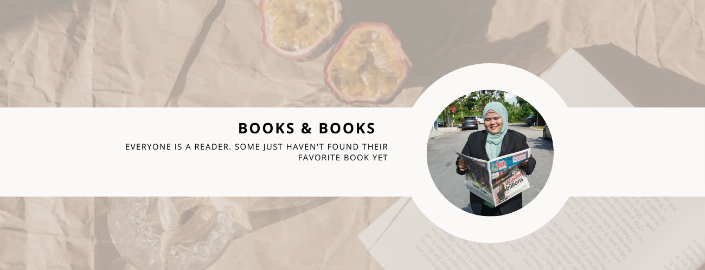
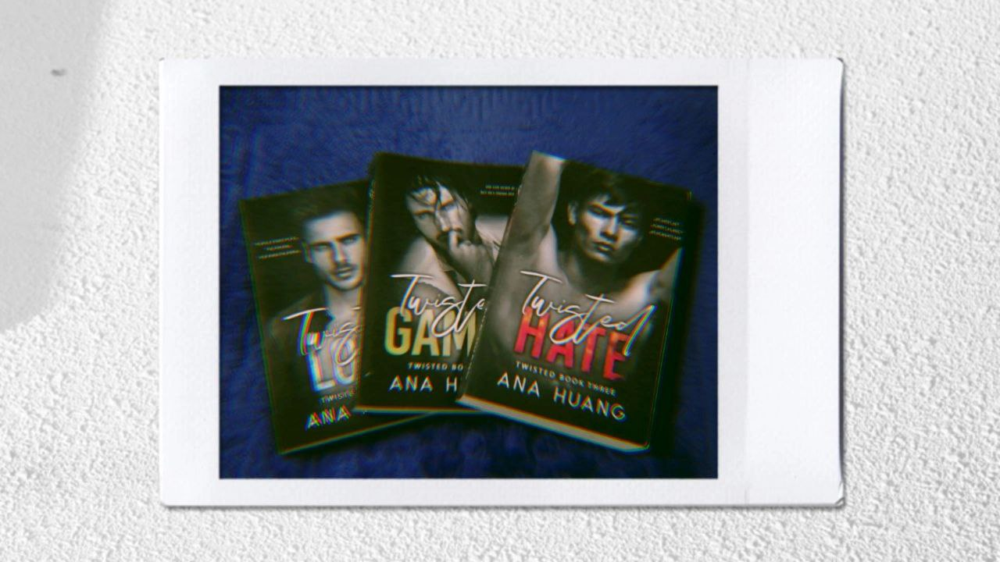
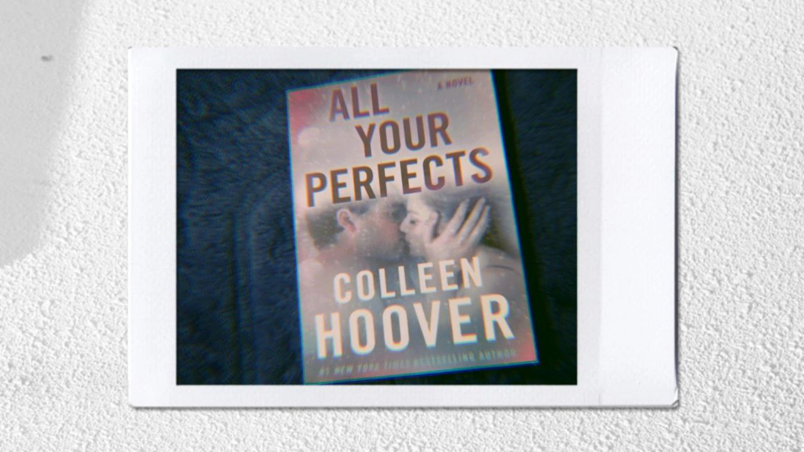
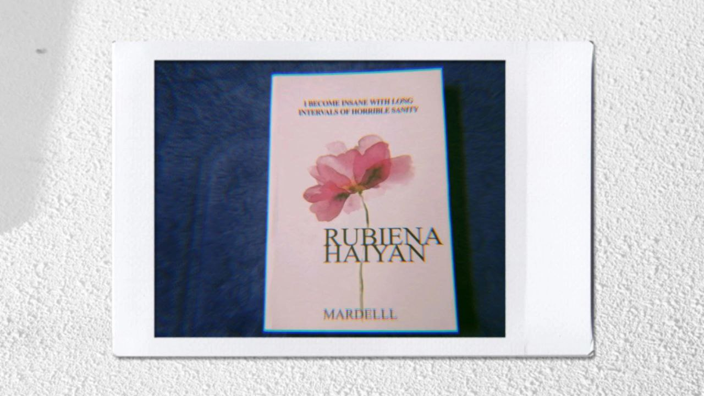

always, often and never
Why do I love reading so much? It's just a paper with a lot of words.
But
For me reading is such a comfort for me. How it makes me feel. Crying and bawling my eyes out,
romantic tension, fake scenarios inside my mind, the butterflies, the burns, the way they convey the message, the words, the sentence, the smell and much more.
Life is better when I'm reading.
Furthermore, it gives me a chance to see the situation from various perspectives. It makes me think much further. Even when I am stressed out or tired,
reading can be therapeutic. It's like there is someone to hold me like no others.
For the book, I prefer to read romance books. I believe that the majority of my book collection
is romance books. Call me cliche, it is what it is<3.

1. TWISTED SERIES
Twisted Series is a New Adult Romance written by Ana Huang. The Twisted series starts with twisted love, twisted games, twisted hate and lastly twisted lies. It combines a number of fantastic motifs, like a brother's best friend, an alpha dark guy, neighbors, royalty, forbidden loves, complex character, suspense, and dark undertones that are rarely seen in NA romances.
All the characters inside this series are well developed. I do not like Alex Volkov in twisted love, but I do love Josh Chen in both twisted love and twisted lies. BUT RHYS LARSEN will always be in MY HEART. For the female character I do believe all the girls in this series are not like a lame type of girl who is so innocent, naive, and easily manipulated. All the women inside this book were chef kisses!
The way those books are related to each other makes me eager to know what will happen in the future. If you want to search for something intense, full of emotion, this is the one.

2. ALL YOUR PERFECTS
This was written by Colleen Hoover. She is one of the famous authors. Firstly, this book hit me hard. This book was raw, full of emotion and a full reminder of reality. It is so real. Reality is not as beautiful as you think. INFERTILITY. The topic itself gives shivers especially to those who really want children. Just because of this one word it could destroy the happiness you have. all people in this world are not perfect.
This book has two parts: then and now. THEN, an unexpected meeting leads to happiness. It's a fun process to learn to love each other. They end up married. but you know what, your struggle doesn't stop even after marriage. NOW, after 7 years Quinn is still not able to have children. The way she treats Graham makes me sick.
This book is highly recommended. Standby tissue. When a book makes you physically and emotionally exhausted, you know it's a good one, and I haven't felt this way in a long time. Happy Reading.
“Our marriage hasn't been perfect. No marriage is perfect. There were times when she gave up on us. There were even more times when I gave up on us. The secret to our longevity is that we never gave up at the same time."

3. RUBIENA HAIYAN
Rubiena Haiyan is a Malay book. I started reading this book when it was published on Wattpad. However, after a few months the author started to publish this book physically. For me this book makes me realize not everyone appreciates what we do. There will always be someone who will be jealous and take advantage of us. Instead of being nice to others, sometimes we need to be selfish. Not everyone deserves our empathy.
Rubiena's life is too tragic and heartbreaking for me. Rubiena’s life is like a pure white cloth, no dirt but unfortunately, full of torn marks and notches. Let a thousand times someone come to hurt, Rubiena remains Rubiena. An innocent girl who is so kind and naive that some even wonder where she came from.
“She feels unwanted yet, she gives the love she think the world needs” -Mardell-
To see books reccomendation🔎:
ENGLISH BOOK RECOMMENDATION HERE PEEPS! MALAY BOOK RECOMMENDATION HERE PEEPS!